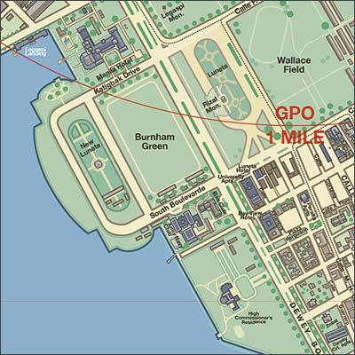

|
j
a v a s c r i p t |
Pg.2/2
February 23, 1945
Today's Free Philippines: "Bataan, Corregidor Free.... Progress slow due to desire to limit civilian casualties." MacArthur says the Japanese are now confined to an area 700 yards by 500 yards in the Walled City. The First Cavalry drove north of the Army-Navy and Elks Club, took Burnham Green, west of Wallace Field, and then fought from the first to the second floor of the Manila Hotel against stiff opposition. A lady reading this told me: "Gee, Manila has been a regular Stalingrad, hasn't it?"

Daniel Burnham's original Plan for Manila
had government buildings around a green zone From the Army-Navy Club to the Burnham Green and the Manila Hotel is a level stretch 500 meters from end to end. The Japanese surely did not defend Burnham Green — it was there around the statue of Jose Rizal where Corominas and other civilians waited for the Americans. The Manila Hotel is completely taken now. Only the wing exposed to American shelling was partially destroyed. Page 1: "Civilians warned to stay out of Fort McKinley area." The Psychological Warfare Unit of the First Cavalry dropped English and Tagalog leaflets in the area: "All civilians are forbidden to enter the fort area or grounds." Seems some over-enthusiastic looters stole some wire and cut the Signal Corps' lines of communication. While I was away today Paul Meyer brought Ma some excess food the Army had given him the previous evening — a nice gesture these days. He refused Ma's offer of payment, saying that money these days simply can't buy the kind of food the U.S. Army serves — and how right he was! So if you'll excuse me, I'll go and have some now. ...ooOoo... |
|
|
|
|